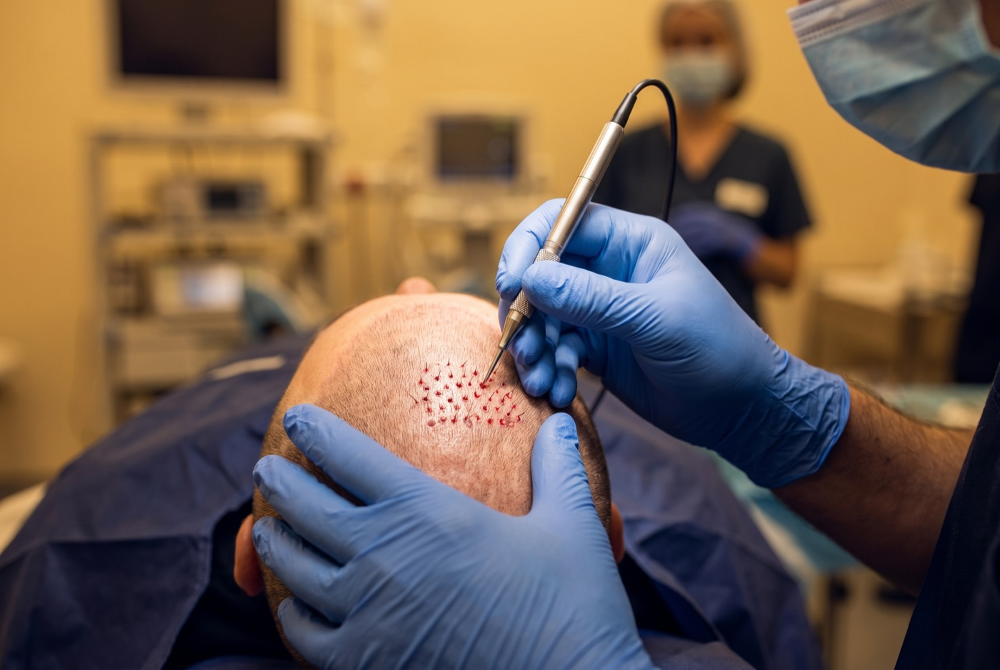
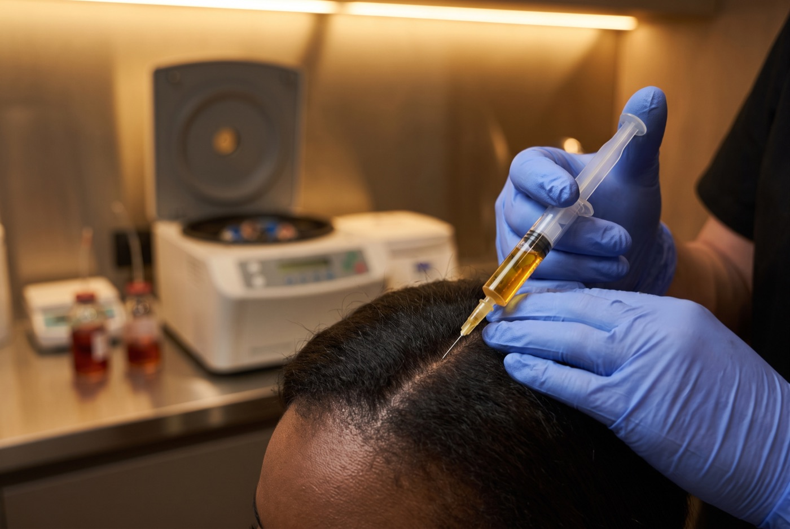
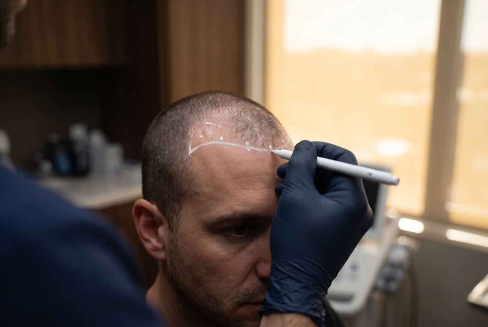
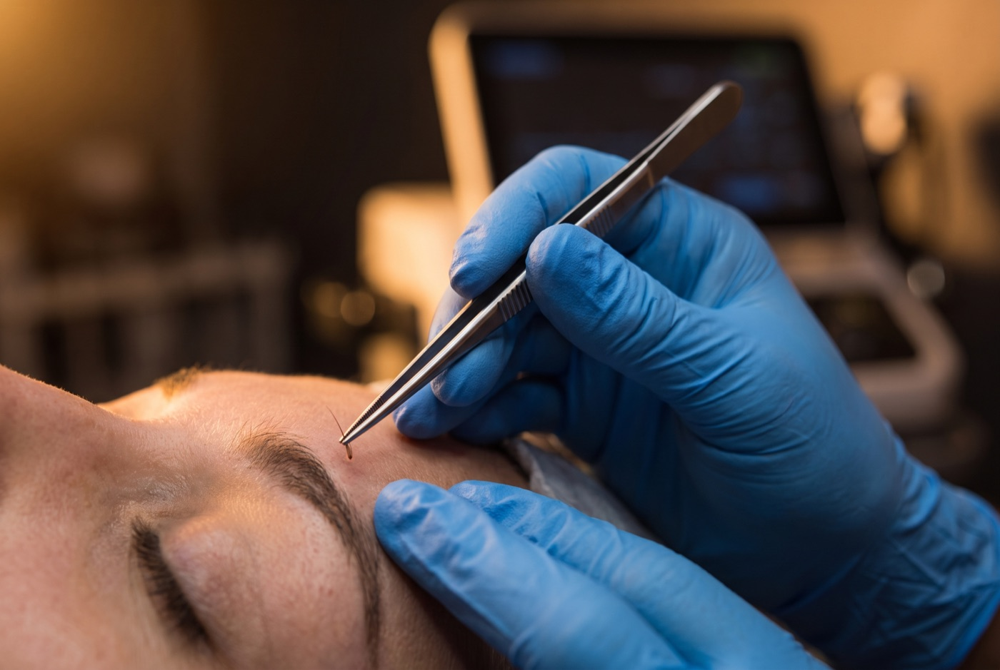
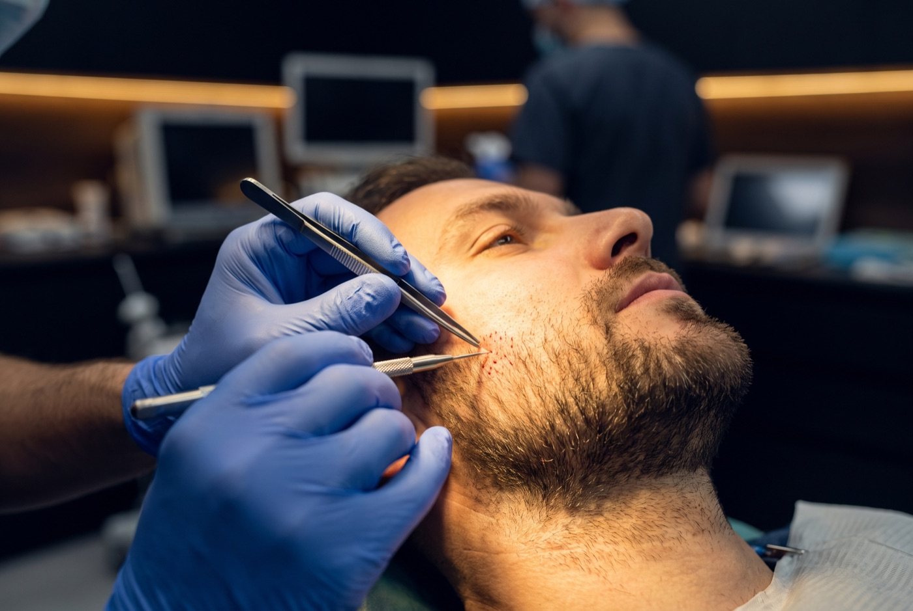
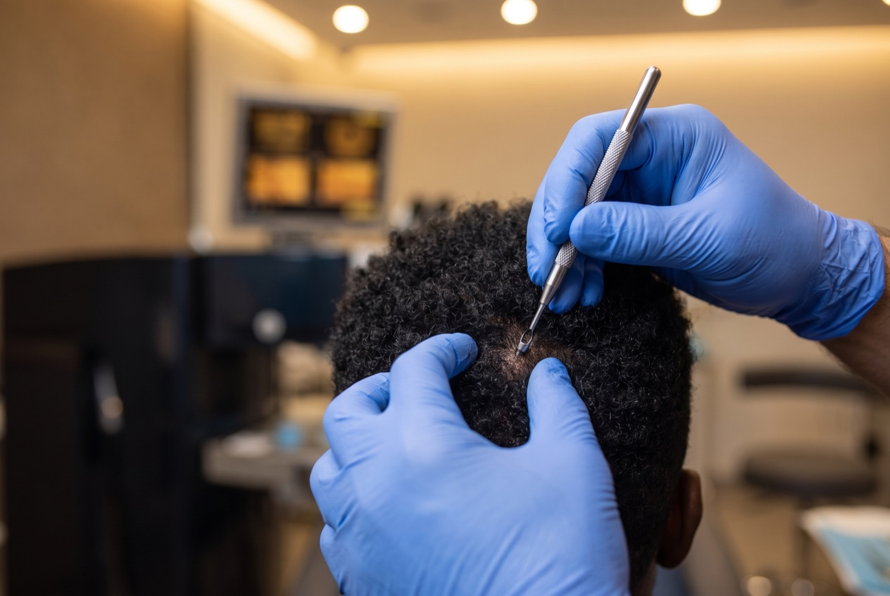

Everything we do, in one place: surgical and non-surgical options, all supervised by our medical team and designed around your face, your hair type, and your goals.
Online Consultation
Individual follicles, moved one by one. No linear scar. Permanent and natural.
Follicles are taken from the back and sides, where hair resists loss, and placed at your natural angle in the thinning areas. Sapphire tips mean denser packing and faster healing.
Evaluate, then draw your hairline together.
Follicles removed one by one, under local anesthesia.
Placed at your natural angle. 4–8 hours.
New hair by month 3–4, full at 12.

Your own platelets, injected to strengthen thinning follicles. No surgery, no downtime.
We draw a little of your blood, concentrate the platelets, and inject that plasma into thinning areas. The growth factors slow shedding and thicken hair. Often paired with FUE.
A small sample, like a routine lab draw.
Spun to isolate the platelet-rich plasma.
Across the thinning zones, numbed for comfort.
A short series, then periodic top-ups.

A receded hairline redrawn to fit your face, rebuilt with a soft, natural edge.
FUE focused on the front. We redesign the shape with you, then place single-hair grafts along the leading edge for a natural, undetectable start.
Draw and agree on your new hairline first.
Follicles harvested under local anesthesia.
Single grafts up front, density behind.
Matures by month 12, with follow-ups.

Thin or over-plucked brows rebuilt hair by hair. Permanent and minimally invasive.
Individual follicles placed at the flat, changing angle real brow hair grows, so the shape looks like yours, not drawn on.
Map the brow shape and density with you.
A few fine follicles, under local anesthesia.
Placed by hand at natural brow angles.
Scabs fade in days; shape matures over months.

Patchy cheeks and jawline filled with your own follicles. Permanent and natural.
FUE for the face: follicles from your scalp placed at the beard’s natural downward angle, so new hair blends with what’s there.
Map density and shape with you.
Follicles harvested from your scalp.
Placed to follow natural beard angles.
Fills in over the following months.

Specialized FUE for curly and coiled hair, where the follicle curves under the skin.
Afro-textured follicles curve beneath the skin, so extraction has to follow that curve. Done right, the curl gives fuller coverage per graft.
Assess your curl and design the plan.
Technique tuned to textured follicles.
Placed at your natural angle and curl.
Matures by month 12.
Share your photos and goals. Our specialist reviews them and a coordinator contacts you with a personalized plan.
Online Consultation